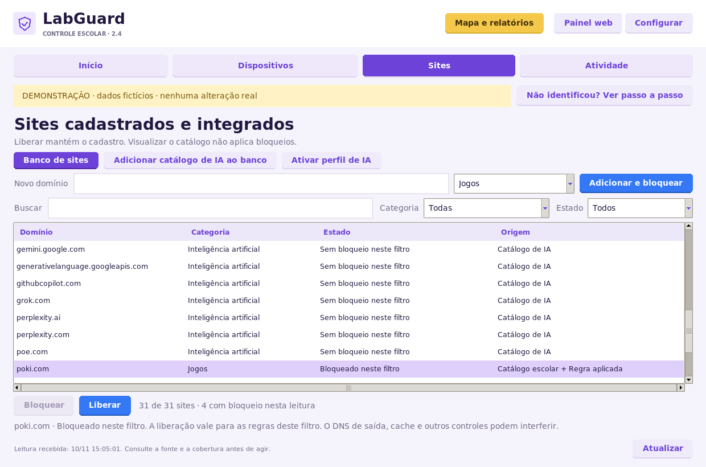

Pelo roteador Vivo
Na configuração de LAN/DHCP, quando o modelo permitir, distribua o IP do filtro como DNS. Renove a configuração de uma estação piloto e confira o teste padrão antes de ampliar o escopo.
LabGuard 2.4.4 / Edição de rede · Windows x64
Instale o painel no PC do técnico. Os computadores do laboratório usam seu DNS, e você administra os bloqueios em um só lugar.
Versão 2.4.4, com Python incluído e lista de sites para bloquear e liberar sem perder o cadastro. As estações precisam usar o DNS do filtro.
O LabGuard responde às consultas DNS e aplica os domínios bloqueados.
O DHCP/LAN do roteador, quando disponível, ou o Windows informa o IP do filtro.
Vivo e switch continuam transportando o tráfego. Os cabos permanecem no lugar.
Use o LabGuard-Setup.exe 2.4.4. Ele instala o painel no computador da TI. Comece com uma estação piloto para conferir a rede antes de ampliar para a turma.
Mantenha o PC e o LabGuard ligados durante o uso. A opção Ligar este filtro ao abrir o LabGuard retoma o filtro ao abrir o aplicativo. Ela não configura o início automático com o Windows.
Se a escola usa Active Directory ou nomes internos, mantenha um resolvedor de saída que consiga atendê-los. A opção de Cloudflare Families pode filtrar conteúdo adulto e malware também na saída; isso influencia quais domínios poderão ser liberados.
Se a edição Cliente ou a Central anterior já foi instalada, conclua a migração para o filtro de rede antes de validar o resultado.
O endereço DNS dos alunos deve ser o IPv4 do PC que executa o LabGuard. Estar no mesmo switch ou Wi-Fi, sozinho, não faz as consultas passarem pelo filtro.
Na configuração de LAN/DHCP, quando o modelo permitir, distribua o IP do filtro como DNS. Renove a configuração de uma estação piloto e confira o teste padrão antes de ampliar o escopo.
Se o Vivo não oferecer esse ajuste, a TI pode definir o DNS no adaptador ativo do Windows, mantendo os endereços IP e gateway atuais. Não é necessário instalar um programa na estação.
ncpa.cpl e abra as propriedades do adaptador ativo, Ethernet ou Wi-Fi.Confira também os resolvedores anunciados por IPv6 e por outros adaptadores. Para usar o DNS IPv4 com IPv6 desabilitado no adaptador da estação, siga o procedimento específico abaixo. Se o teste direto funcionar e o padrão falhar, as consultas usuais ainda estão seguindo outro caminho. Funciona no PC da TI, mas não no aluno? Siga o diagnóstico e o ajuste DNS sem cliente. No aplicativo, o atalho é Configurar → 2. Usar nos computadores → Guia e ferramenta IPv6. Ele abre as instruções; a ferramenta deve ser executada na estação escolhida.
O switch Mercusys não gerenciável continua funcionando normalmente. O LabGuard não precisa estar entre o Vivo e os alunos e não altera automaticamente os menus do roteador.
Abra Sites ou Gerenciar sites. A tela Sites cadastrados e integrados reúne os 8 domínios da lista escolar, os 23 do catálogo de IA, seus cadastros e as regras disponíveis no filtro. Visualizar o catálogo não ativa todos os bloqueios.

Use Buscar, Categoria e Estado. A tabela mostra Domínio, Categoria, Estado e Origem. Selecione a linha do site desejado.
Com o filtro ativo e autorizado, clique em Bloquear. Confira a confirmação e o estado Bloqueado neste filtro. A regra também abrange subdomínios.
Selecione um item com bloqueio direto e clique em Liberar. A regra é retirada e o cadastro inativo continua visível, inclusive após reiniciar o aplicativo. Use Estado → Todos para acompanhar as duas ações no mesmo item.
Em Banco de sites, use Novo, Salvar, Importar TXT ou Excluir. Para refletir alterações feitas no banco, use Aplicar ao gateway e confira o resultado.
O botão do banco se chama Aplicar ao gateway também ao usar o filtro DNS local. As ações Bloquear e Liberar da lista atuam individualmente no filtro. A exclusão no banco é uma ação de cadastro; os domínios do catálogo integrado continuam disponíveis na lista.
A tela Atividade mostra as consultas recebidas pelo filtro e seu resultado. Ela não confirma que cada aluno visitou uma página, nem coleta o conteúdo HTTPS. Se o roteador encaminhar as consultas, o IP registrado poderá ser o do roteador.
No PC da TI, abra Configurar → 3. Testar → Diagnóstico manual. Use Copiar teste direto e Copiar teste padrão e execute os comandos no Prompt de Comando da estação piloto.
nslookup -type=TXT labguard-check.invalid. IP_REAL_DO_FILTROSubstitua IP_REAL_DO_FILTRO pelo IPv4 mostrado no LabGuard. O botão do aplicativo já copia o endereço correto.
nslookup -type=TXT labguard-check.invalid.Use o ponto final do nome nos dois comandos. O segundo comando verifica o caminho que a estação usa normalmente.
Os dois resultados precisam trazer o mesmo código LabGuard-... da sessão ativa. O código muda ao reiniciar o filtro. O autoteste no PC da TI não comprova sozinho que o aluno está usando esse DNS.
Se você bloqueou roblox.com, execute nslookup roblox.com pelo DNS padrão e confira o resultado em Atividade. A indicação Bloqueio DNS confirmado se refere à consulta recebida. Confira também um site permitido e a navegação na conta do aluno; cache e conexões já abertas podem exigir uma nova sessão do navegador.
As ferramentas Administrar estações e Painel web → Estações são opcionais para redes que já possuem administração remota preparada. Um erro de WinRM não impede o teste manual por DNS.
Use poki.com em uma estação piloto que já passou nos testes de DNS. Faça a demonstração na conta do aluno e mantenha o filtro ligado no PC da TI.
poki.com e selecione a linha. Se estiver Bloqueado neste filtro, clique em Liberar. Com Sem bloqueio neste filtro, siga para o teste de abertura.ipconfig /flushdns, feche/reabra o navegador e acesse https://poki.com. Confirme que a página abre antes de continuar.Se a página já não abrir na primeira etapa, confira o domínio pai, o perfil de IA, o DNS de saída e outras regras da escola antes de atribuir o resultado ao LabGuard. Cache, conexões anteriores, DNS seguro e VPN também podem alterar o teste. Uma mensagem NXDOMAIN isolada não identifica quem respondeu.
O estado na lista representa a leitura do filtro. A prova da demonstração combina essa leitura, o registro em Atividade e a navegação na estação. O guia de DNS e IPv6 mostra como investigar quando o PC da TI e o aluno se comportam de forma diferente.
Para passar a usar somente a filtragem pela rede, remova a proteção local instalada anteriormente antes de conferir os bloqueios do DNS.
Desvincular não desinstala o Cliente: apenas retoma sua política local. Use a desinstalação do próprio programa, sem apagar as pastas manualmente. Jogos já removidos não são reinstalados por essa operação.
Consulte o guia preservado de desinstalação do Cliente ou o manual da Central anterior quando necessário.
Para esta edição de rede, o LabGuard fica no PC da TI. As estações precisam usar seu DNS; esse endereço pode ser distribuído pela rede ou configurado no Windows. Os testes pelo CMD usam ferramentas que já existem no sistema.
O PC e o LabGuard precisam continuar ligados para responder às consultas. Antes de parar o filtro, restaure o DNS anterior no DHCP ou nas estações. Deixar um computador usando um DNS desligado pode interromper a resolução de nomes.
O filtro DNS bloqueia os domínios aplicados, não desinstala programas. Jogos offline e aplicativos com outros domínios ou resolvedores próprios exigem outras políticas da escola. A administração remota avançada possui requisitos separados.
Verifique a regra aplicada, o teste padrão da estação, domínios de autenticação e conteúdo, cache, DNS seguro do navegador e VPN. O filtro trata as consultas que efetivamente chegam a ele. Ele não inspeciona o conteúdo HTTPS nem corta toda a internet por IP/MAC.
Marque Ligar este filtro ao abrir o LabGuard na configuração e inicie o filtro com sucesso. Com o filtro ativo, use Salvar início automático para alterar essa preferência. Para execução contínua como serviço, consulte a documentação avançada do servidor.
Referências de apoio: configurações de rede do Windows e comando nslookup.